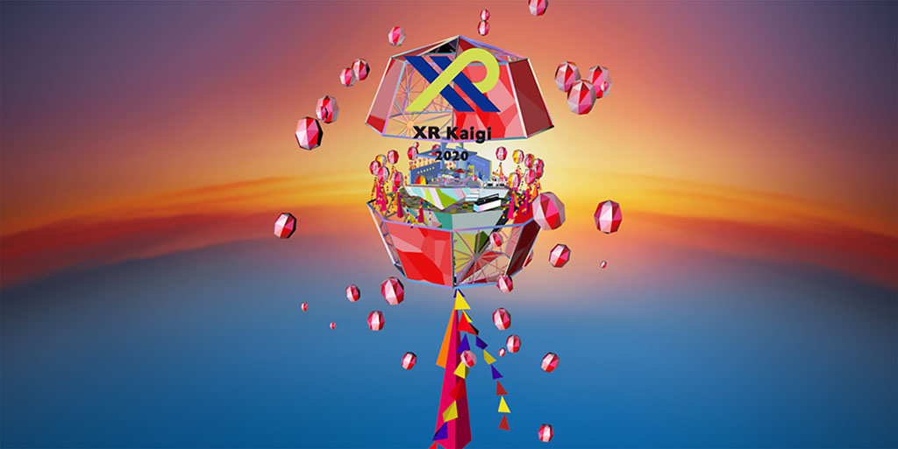
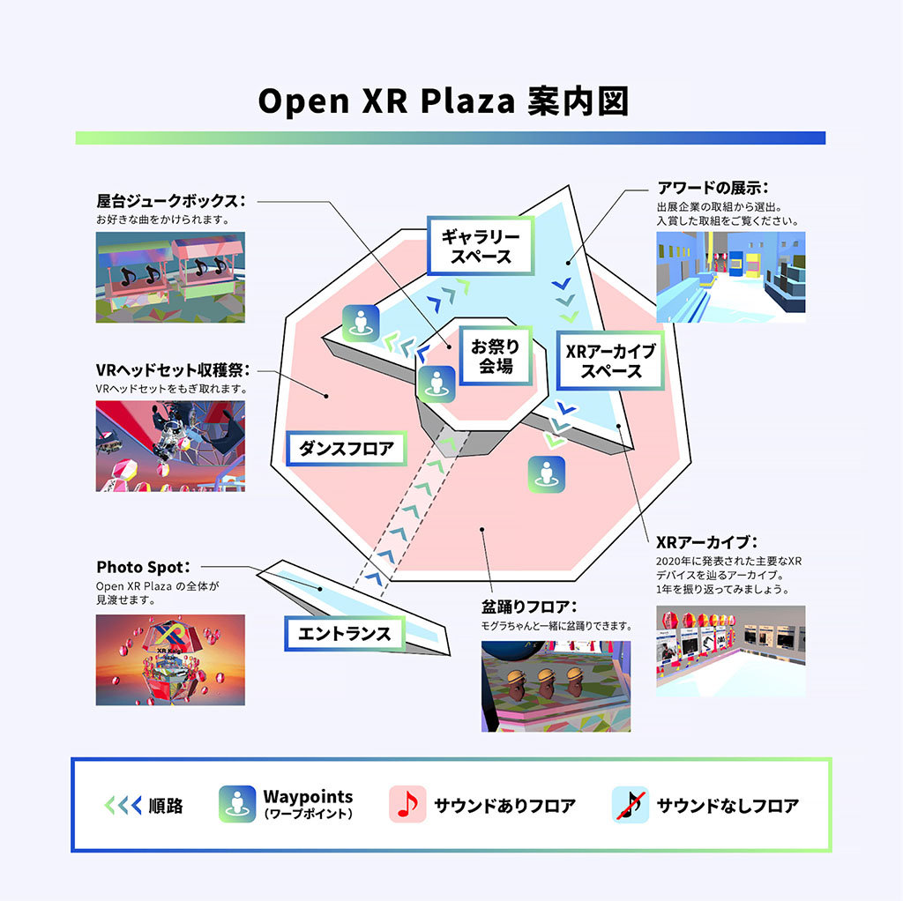

Open XR Plaza
バーチャルにおける公共性の実験場
「Open XR Plaza」は、いわゆる会場ロビーのような、XR Kaigi参加者同士が集い、コミュニケーションをとることのできるバーチャル空間です。XR Kaigi 2020のダイヤモンドスポンサーであるTHINK AND SENSEと事務局を務める株式会社Moguraのコラボレーションで生まれました。

コロナ禍で物理的なつながりが強制的に断たれた2020年。現実の代替としてのバーチャル空間が注目を集めました。バーチャル空間が実現する体験と社会にもたらす価値はまだ議論が始まったばかりです。
「Open XR Plaza」は、「バーチャルにおける公共性の実験場」を掲げ、ワールドの中に複数の階層をデザインをしました。階層を移動していくごとにアバターのサイズが巨大化していきます。

- お祭り会場：エントランスから入ってまず到着するコーナー。ジュークボックスでBGMを切り替えたり、広場があります。
- ギャラリースペース：「XR Kaigi 2020 Awards」を受賞した取組がショーケースされています。ゆっくりとご覧ください。
- XRアーカイブスペース：デバイスから2020年のXR業界を振り返るコーナーです。
- ダンスフロア：BGMが大きくかかっているエリアです。もぐらちゃんが踊っています。空中に浮かぶVRヘッドセットをもぎ取って遊ぶこともできます。
XR Kaigi 2020 Awards
「XR Kaigi 2020 Awards」は、XR Kaigi 2020の全19社のバーチャル展示からXRの普及へ貢献している（するポテンシャルのあると考えられる）取組を表彰するアワードです。今後、毎年XR Kaigiで開催予定です。
初回となる今回は、ハードウェア部門、アプリケーション部門、アクティビティ部門の3部門でそれぞれ大賞と副賞を選出しました。
本アワードの結果はXR Kaigi当日、「Open XR Plaza」にてショーケースで紹介しています。どの取組が選ばれたのか、ぜひご自身の目でお確かめください。